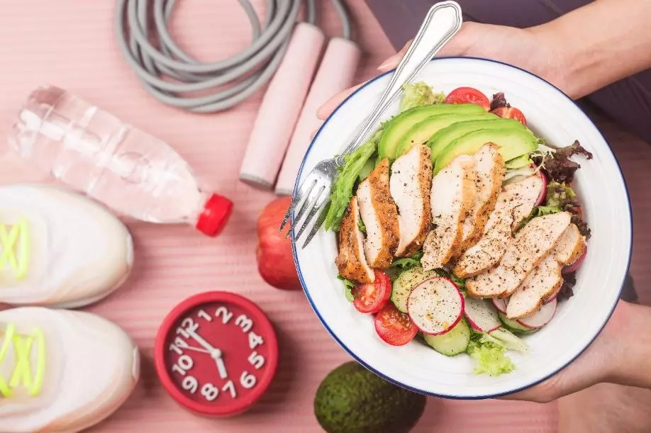
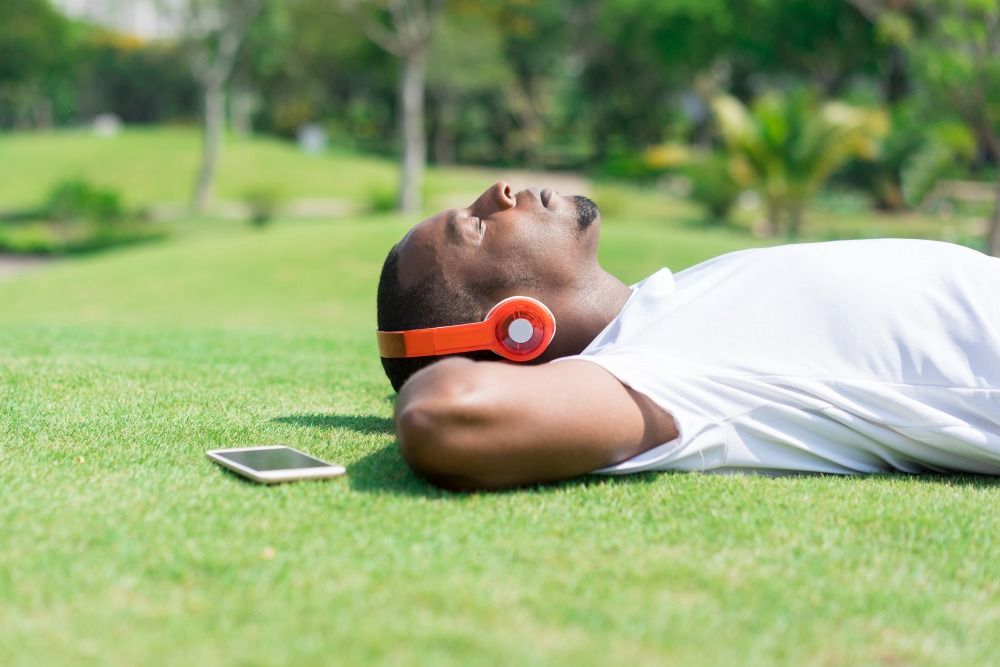

💪 Pós-Treino: O que Fazer para uma Recuperação Eficiente
O período pós-treino é crucial para a recuperação muscular, reposição de energia e maximização dos resultados. Abaixo, apresentamos dicas essenciais para um pós-treino eficaz.
🍽️ Alimentação Adequada
Consumir uma combinação de proteínas e carboidratos após o treino auxilia na recuperação muscular e reposição de glicogênio. Exemplos incluem:
- Frango grelhado com batata-doce
- Ovos mexidos com pão integral
- Iogurte natural com frutas e aveia
- Shake de whey protein com banana
💧 Hidratação

Repor os líquidos perdidos durante o exercício é fundamental. Beba água ou bebidas isotônicas para manter o equilíbrio eletrolítico e auxiliar na recuperação.
🛌 Descanso e Sono
O descanso adequado permite que o corpo se recupere e se fortaleça. Dormir entre 7 a 9 horas por noite é essencial para a regeneração muscular e bem-estar geral.